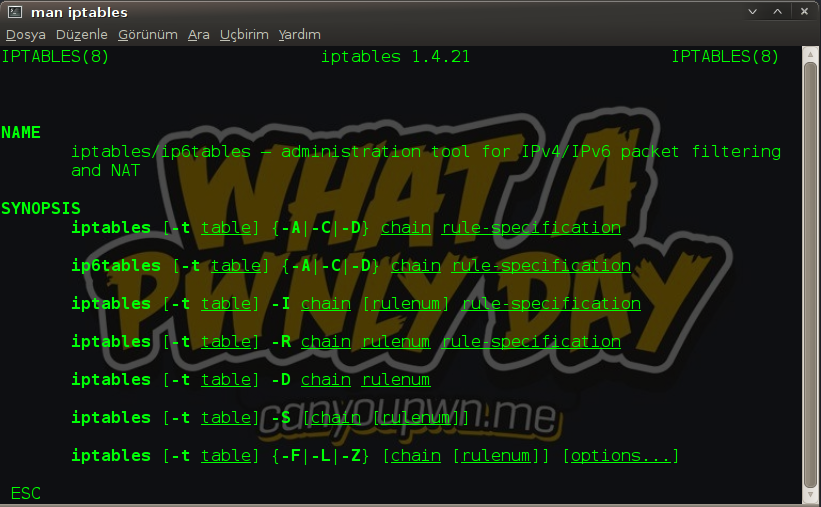
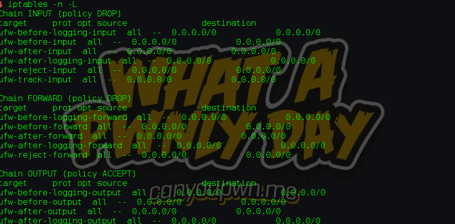
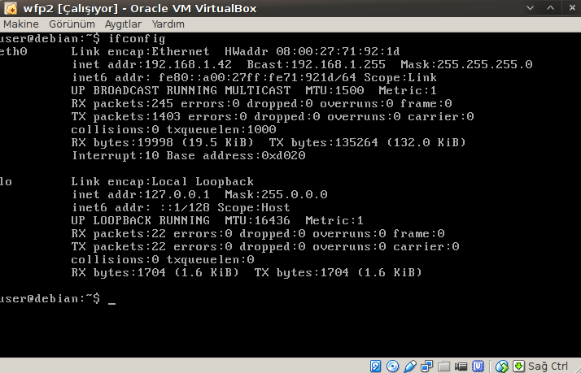
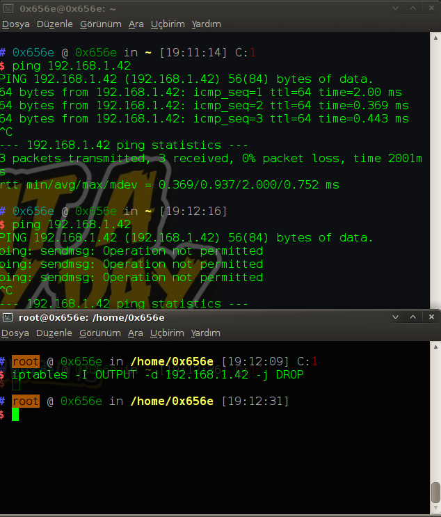
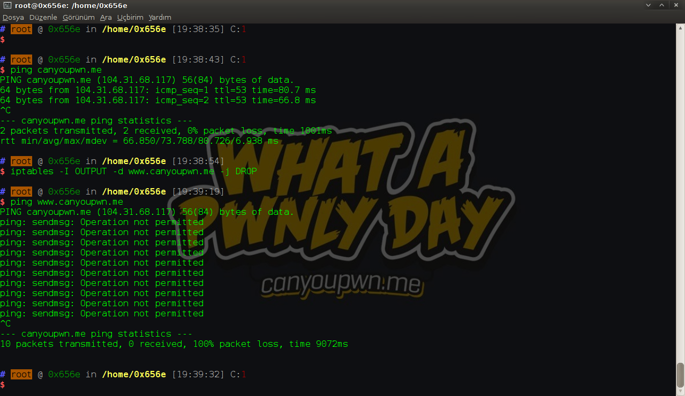
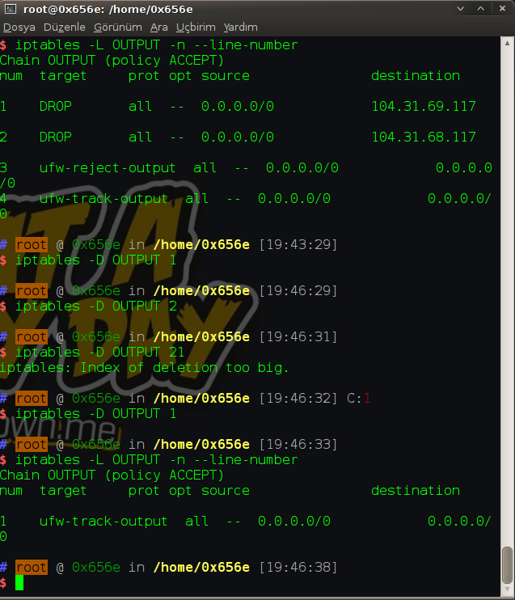
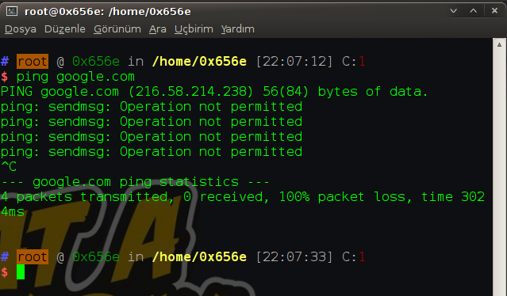

Kernel bazında çalışan ağ paketlerini inceleyebileceğimiz müdahalede bulunabileceğimiz,Linux üzerinde çalışan bir güvenlik duvarı( ateş duvarı (firewall))dır.Oldukça kullanışlı bir araçtır kendisi.Linux üzerinde ki hangi tool/yazılım değil ki ?

Sıfır bir iptables ayarlarına bir göz atalım isterseniz.
iptables -L -n --line-numbers

Tam halini görmek için : default
-L : Kuralları listeler
-n : Burada ip ve portlarını bize göstermesini istediğimizi belirtiyoruz.DNS isim çözümlemesi kullanmaz bu yüzden hızlı bir şekilde listeleme yapar.
* --line-numbers :Kuralları kural tipine göre satır numaralarıyla birlikte gösterir.
Bir ip adresini drop edelim isterseniz.Şuan elimde web for pentesterın imajı var.Hemen ip almasını sağlayalım.

Gördüğünüz gibi 192.168.1.42 ip’sini almış.

iptables -I OUTPUT -d 192.168.1.42 -j DROP
Bu kodu şimdi aşama aşama görelim
-I : Insert kelimesinin ilk harfi yani burada kural eklemek istediğimizi söylüyoruz.
OUTPUT : Verdiğimiz ip adresine veri gönderimini engellesin.
-d : Destination kelimesinin ilk harfidir.Yani hedefi 192.168.1.42 olan paketleri engelle.
-j : Jump kelimesinin kısaltması olarak kullanılmış.Kural için hedef gösteriliyor burda.Yani bu kurala uyan paket drop edilsin şeklinde hikayeleştirilebilir sanırım.
Şimdide bir domain engelleyelim isterseniz.
iptables -I OUTPUT -d https://www.canyoupwn.me -j DROP

İyi hoş güzel biz engelliyoruz ama lazım oldu bunu kaldırmak istedik o zaman nasıl yapacağız ?
O zaman ilk önce şöyle komut gireceğiz.
iptables -L -n --line-number | grep “ipadresi”
Şaka şaka evet bu yöntemi de kullanabilirsiniz ama kurallarınız çoğaldığın da bu bir sorun olacak.
iptables -L OUTPUT -n --line-number
Bu şekilde eklediğiniz kuralları görebiliyorsunuz.”–line-number” komutunu verdik ki silerken satır satır silmemizde bize kolaylık sağlasın diye.
Silmek için aşağıda ki komut yeterlidir.
iptables -D OUTPUT 1
Kodumuza daha yakından bakalım.
-D : Delete’in ilk harfi.Yani silmek istediğimizi belirtiyoruz.
OUTPUT : Çıkış yapan paketleri engellemek istediğimizi belirtiyoruz.
* 1 : 1.Numaralı satır demektir.

Şu ana kadar hep engellerken -d parametresini kullandık.İsterseniz source’un ilk harfi olan -s i kullanabilirsiniz.Bu da şu anlama gelir.Şöyle örnekle açıklayalım.
iptables -I INPUT -s 192.168.1.42 -j REJECT
Burada kaynağı yani bize paket gönderen 192.168.1.42 olur ise onu reddet diyoruz.
IPTables ile istersek belirli portalara gelen istekleri veya giden istekleri de engelleyebiliyoruz.Mesela bir şirkette çalıştığımızı düşünelim ve 80 portunun çıkışını engelleyelim ama girişi olsun.
iptables -I OUTPUT -p tcp --dport 80 -j DROP
Bu şekilde engelleyebiliyoruz.Ama bilirsiniz uzak bir ülkede telekom firması da bu şekilde 3 ay boyunca borcunuzu ödemediğiniz takdirde 80 portunu kapatıyordu fakat bir sorun vardı https üzerinden internete ( yavaşda olsa ) çıkabiliyorduk.İşte yukarıda yazdığımız kod ile biz de böyle bir artık açık mı dersiniz ne dersiniz ona sebebiyet verdik :).Burada –dport yerine –sport da kullanarak source port ( kaynak port ) engelleyebilirsiniz.
Aslında bu şekilde kişisel bilgisayarınızda bir kod ile bunu sağlar iseniz ssl sertifikası olmayan siteye girmemiş olursunuz.
İsterseniz şimdide bize ping atanları engelleyelim ne dersiniz ? Yani sadece ping atmalarını engelleyeceğiz diğer her işlevi yapabilicekler.( Fişi çekmekten iyidir 😛 )
iptables -I INPUT -p icmp --icmp-type echo-reply -j DROP
Eğer bizden bir ping çıkmasın istiyorsanız.
iptables -I OUTPUT -p icmp --icmp-type echo-request -j DROP

Genel anlamda aslında iptables ın tüm argümanlarına değindik.Değişek tek şey ip’ler ve protokoller ( tcp / udp ) . Bahsetmediğimiz birkaç şey kaldı bunlarda interface seçmek,load-balancing,time limit ve port yönlendirme.
İnterface seçimi :
iptables -I OUTPUT -d 192.168.1.43 -i wlan1 -j DROP
Kod tamamen örnek amaçlıdır.Burada -i input interface(Paketin alındığı arayüz) anlamına gelir.
iptables -I OUTPUT -d 192.168.1.43 -o wlan1 -j ACCEPT
Burada -o output interface ( Paketin gönderildiği arayüz ) anlamına geliyor.
Bu kodumuzda ise paketlerin alınma veya yollanma sıklığını belirleyebiliyoruz.
Kodumuza şöyle birşey eklerisek yeterli gelicektir.
iptables -m limit --limit sıklık/zaman(Hour veya Second cinsinden )
iptables -m limit --limit 10/5s -j DROP
Bazı sistemlerde yük dengelemeye ihtiyaç duyulabilir ki duyulması da gerekir aksi takdirde yük dağıtımı olmadığı zaman sistemin çalışmasında sıkıntılar meydana gelecektir.İşte bu gibi durumlar içinde iptables da argümanlarımız bulunuyor.
iptables -I PREROUTING -p tcp --dport 80 -j DNAT --to-destination 192.168.1.1
iptables -I PREROUTING -p tcp --dport 80 -j DNAT --to-destination 192.168.1.2
Burada hedefi 80 olan tüm paketleri iki sunucu arasında paylaştırdık.
iptables -t NAT -I PREROUTING -p tcp -d 192.168.1.5 --dport 500 -j DNAT --to 192.168.1.100:300
Burada -t argümanı table ( tablo ) dan gelmektedir.Yani nat tablosuna ekliyoruz bu kuralı.
Burada hedefi 192.168.1.5:500 olan bir isteği 192.168.1.100:300 e yönlendirdik.
Herhangi bir yerde hata görürseniz bildirmekten çekinmeyiniz teşekkür ederim.